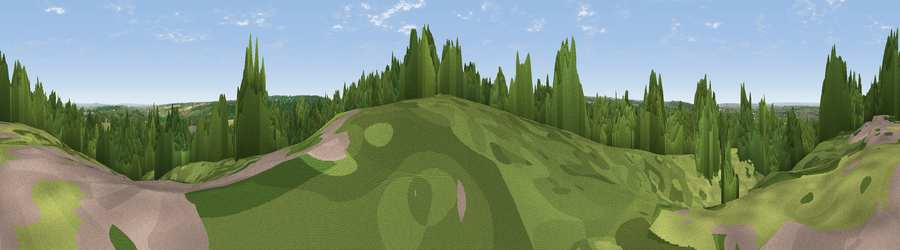

Viewpoint near Well Hill
#38745 in England · top 41% of its area beats it · near Well Hill · path 94 mWhere it is
The exact computed spot (TQ 49625 63425). Click the marker for map links.
Public access: the nearest public right of way is about 94 m away — the final stretch may cross private land. Computed from Natural England's CRoW access layer and OpenStreetMap rights of way — not the legal definitive map. Always verify locally.
The view, rendered

A 360° render of this exact spot computed from the terrain model, tree cover and land cover — summer colours, afternoon light, calibrated against photographs of famous viewpoints. Real trees, hedges and buildings will differ in detail.
The panorama
Grey silhouette: terrain skyline in each direction (720 bearings, Earth curvature and refraction included). Dashed green: skyline with trees (+15 m) and buildings (+8 m) as obstacles. Blue strip: how far the ground is visible on each bearing.
Where the view opens
Wedge length = distance to the farthest visible ground on that bearing (vegetation-aware). Rings at 10, 25 and 50 km.
What fills the view
56% woodland · 31% grassland · 8% cropland · 5% built-up
Angular shares of the visible panorama (visual magnitude), not map area. Landscape diversity 0.45 (0–1 Shannon).
Key numbers
More beautiful places nearby
The staircase of upgrades: each row has a higher view potential than everything closer. Driving times are estimates from straight-line distance, calibrated against real road routing — check an actual route before setting out.
| Place | Direction | Drive | Score |
|---|---|---|---|
| Viewpoint near Well Hill | N · 0 km | ~1 min | 35.5 |
| Viewpoint near Shoreham | SE · 4 km | ~9 min | 40.2 |
| Viewpoint near Brasted | SSW · 8 km | ~16 min | 42.6 |
| Viewpoint near Westerham | SW · 9 km | ~18 min | 43.5 |
| Viewpoint near Wrotham | ESE · 10 km | ~20 min | 43.9 |
| Viewpoint near Wrotham | ESE · 11 km | ~21 min | 53.6 |
| Viewpoint near Sevenoaks Weald | SSE · 12 km | ~22 min | 56.9 |
| Viewpoint near Ide Hill | S · 12 km | ~22 min | 62.7 |
51.35021, 0.14721 · source: screening · position refined by local search. Computed location — check access rights before visiting.